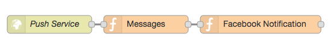
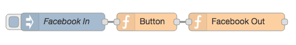

用來傳送訊息至通訊平台，目前包含二種 Node：Message、Button
用來純文字訊息
用來傳送可點選的訊息
Message Node 內部可以設定傳送的訊息，再藉由 Facebook Out Node 送出至 Facebook 通訊平台
Message Node 可將上一個 Node 傳來的 payload 資料藉由 Message Node 轉成文字訊息。如上圖所示，Push Service Node 回傳的資料會存入 payload 裡，Message Node 不需再做任何設定，即可將 Push Service Node 回傳的資料藉由 Facebook Notification Node 送出至 Facebook 通訊平台
Button Node 跟 Message Node 類似，在內部設定多組選項，再藉由 Facebook Out Node 送出至 Facebook 通訊平台供使用者點選回覆